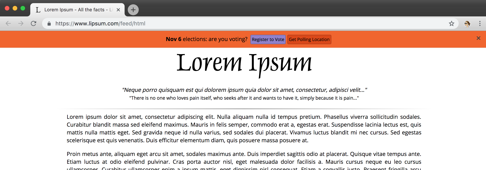

A Pro-Voting Banner for Upcoming U.S. Midterms
☞ Add a voter registration call-to-action to your website
This simple code snippet will add a voter registration call-to-action to any page.
The banner is only shown for U.S. users up to election day. As election day approaches, the "Register to Vote" option will be replaced by the "Get Polling Location" button.

This library is open source on github here.
☞ Add it to your site
Include this line of HTML on your site:
<script src="https://s3.amazonaws.com/vote-banner/r1/banner.min.js" async></script>
To quickly preview how it looks on your page, you may paste this into your console:
var script = document.createElement('script');
script.type = 'text/javascript';
script.src = 'https://s3.amazonaws.com/vote-banner/r1/banner.min.js';
document.body.appendChild(script);
☞ How to customize it
You can set the following attributes under window.voteBannerConfig:
- backgroundColor: The background color of the banner
- fontColor: The font color of the banner
- defaultButtonFontColor: The font color for buttons
- defaultButtonBackgroundColor: The background color for buttons
- defaultButtonBackgroundColorHover: The background color for buttons on hover
- mainButtonFontColor: The font color for the main call-to-action button ("Register to Vote")
- mainButtonBackgroundColor: The background color for the main call-to-action button
- mainButtonBackgroundColorHover: The background color for the main call-to-action button on hover
- text: The text shown (HTML ok)
Here is the default settings object:
window.voteBannerConfig = {
backgroundColor: '#f26522',
fontColor: '#000',
defaultButtonFontColor: '#fff',
defaultButtonBackgroundColor: '#dc4700',
defaultButtonBackgroundColorHover: '#8c3911',
mainButtonFontColor: '#fff',
mainButtonBackgroundColor: '#8f7fcc',
mainButtonBackgroundColorHover: '#5c3fcc',
text: '<strong>Nov 6</strong> elections: are you voting?',
};